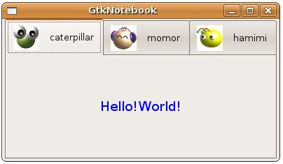

在
版面配置上，可以會使用GtkNootbook來作功能頁的分類，它提供多個顯示頁，可以藉由上方的標籤來選擇所要的功能頁面，下面的程式簡單的示範如何
將元件加入GtkNotebook成為一個標籤頁，其中createTab()函式用以建立一個GtkHBox，內含圖片與文字，用以作為功能頁的標籤顯
示，要加入一個功能頁，可以使用gtk_notebook_append_page()函式，指定功能頁內容及標籤。
#include <gtk/gtk.h>
GtkWidget* createTab(gchar *filename, gchar *text) {
GtkWidget *box;
GtkWidget *label;
GtkWidget *image;
box = gtk_hbox_new(FALSE, 5);
gtk_container_set_border_width(GTK_CONTAINER(box), 2);
image = gtk_image_new_from_file(filename);
label = gtk_label_new(text);
gtk_box_pack_start(GTK_BOX(box), image, FALSE, FALSE, 5);
gtk_box_pack_start(GTK_BOX(box), label, FALSE, FALSE, 5);
gtk_widget_show (image);
gtk_widget_show (label);
return box;
}
int main(int argc, char *argv[]) {
GtkWidget *window;
GtkWidget *notebook;
GtkWidget *tab;
GtkWidget *label;
gtk_init(&argc, &argv);
window = gtk_window_new(GTK_WINDOW_TOPLEVEL);
gtk_window_set_title(GTK_WINDOW(window), "GtkNotebook");
gtk_window_set_default_size(GTK_WINDOW(window), 300, 200);
notebook = gtk_notebook_new();
tab = createTab("caterpillar.jpg", "caterpillar");
label = gtk_label_new(NULL);
gtk_label_set_markup(GTK_LABEL(label),
"<span foreground='blue' size='x-large'>Hello!World!</span>");
gtk_notebook_append_page(GTK_NOTEBOOK(notebook), label, tab);
tab = createTab("momor.jpg", "momor");
label = gtk_label_new(NULL);
gtk_label_set_markup(GTK_LABEL(label), "<big>Big text 2</big>");
gtk_notebook_append_page(GTK_NOTEBOOK(notebook), label, tab);
tab = createTab("hamimi.jpg", "hamimi");
label = gtk_label_new(NULL);
gtk_label_set_markup(GTK_LABEL(label), "<big>Big text 3</big>");
gtk_notebook_append_page(GTK_NOTEBOOK(notebook), label, tab);
gtk_container_add(GTK_CONTAINER(window), notebook);
g_signal_connect(GTK_OBJECT(window), "destroy",
G_CALLBACK(gtk_main_quit), NULL);
gtk_widget_show_all(window);
gtk_main();
return 0;
}
一個執行的結果如下所示：

|
|